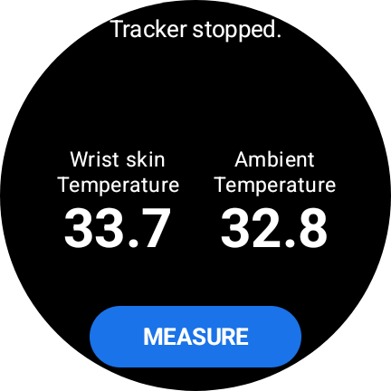
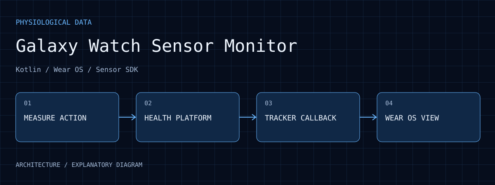

可閱讀的流程
原始碼與 README 說明按鍵觸發、一次回呼及停止 tracker 的完整操作。
Galaxy Watch Sensor Monitor
Wear OS／Kotlin 感測 App，透過 Samsung Health Sensor SDK 進行單次皮膚溫度量測，顯示手腕溫度、環境溫度、時間與感測狀態。
01 / EVIDENCE

保存於 2026 年 6 月 10 日的介面截圖，顯示 Wrist skin Temperature 33.7、Ambient Temperature 32.8，以及 Tracker stopped。MEASURE 按鈕對應下一次量測請求。這是 SDK 輸出欄位與操作狀態的紀錄，不能據此換算核心體溫，或判定感測準確度。
查看原圖 ↗原始碼與 README 說明按鍵觸發、一次回呼及停止 tracker 的完整操作。
操作畫面並列皮膚溫度、環境溫度與 tracker 狀態，讓單次讀值和量測是否結束可以一起閱讀。
本頁補入保存的手錶介面截圖，可對照讀值欄位及 Tracker stopped 狀態；單張紀錄不構成準確度、重複性或臨床評估。
02 / WALKTHROUGH
HealthSensorManager 先檢查 BODY_SENSORS 權限、服務連線，以及裝置是否支援 SKIN_TEMPERATURE_ON_DEMAND。缺權限或不支援 tracker 時，介面應顯示原因，而不是一直等待數值。
收到回呼後取最後一個 DataPoint，解析 STATUS、OBJECT_TEMPERATURE、AMBIENT_TEMPERATURE 與 timestamp。空清單有獨立狀態；異常 STATUS 不會被當成有效溫度，缺值也不補為零。
一次資料回呼後結束 tracker；程式另設 30 秒等待上限，沒有回呼時回報逾時。StateFlow 將讀值、回呼數與狀態提供給介面，使操作結果不只剩下一個數字。
這是範圍明確的感測整合實作。PPG 僅保留停用的擴充入口，不能把它描述為已完成的多訊號健康監測平台。
03 / PURPOSE
建立可操作的手錶端量測入口，觀察感測值、回呼與錯誤狀態。
04 / ARCHITECTURE

Kotlin 畫面提供單次量測入口，顯示溫度、單位、時間與狀態。
HealthSensorManager 協調 Samsung Health Platform 的連線、權限及 tracker 可用性。
使用 SKIN_TEMPERATURE_ON_DEMAND，收到一次回呼後停止 tracker，避免介面持續佔用量測資源。
PPG green／red／IR 保留程式入口但預設停用；不能當成已完成的連續 PPG 產品。
05 / WORKFLOW
使用相容實體 Galaxy Watch 與 Samsung SDK，先處理服務及權限狀態。
按下 Measure 啟動 on-demand tracker，畫面轉為等待資料。
接收手腕與環境溫度，同時呈現回呼時間或錯誤資訊。
停止 tracker，保留本次讀值供查看，再等待下一次操作。
06 / ANALYSIS
無資料可能來自權限、服務、tracker 支援或接觸條件。保留錯誤與狀態，才能區分沒有完成量測與有效數值。
一次回呼即停止使操作邊界明確；它不構成長時間連續溫度紀錄，也不能推導日夜趨勢。
Samsung AAR 與平台政策是執行條件。一般模擬器的 UI 顯示不能替代手錶感測器的驗證。
07 / REPRODUCE
08 / LIMITS
依 README 以 Galaxy Watch6 或更新實機為目標，需另行提供 SDK AAR 並符合權限與平台政策；不作醫療診斷用途。
09 / SOURCES
入選圖像保留原始畫面內容，圖說分別註明原型照片、操作介面、歷史紀錄、分析輸出或模擬。